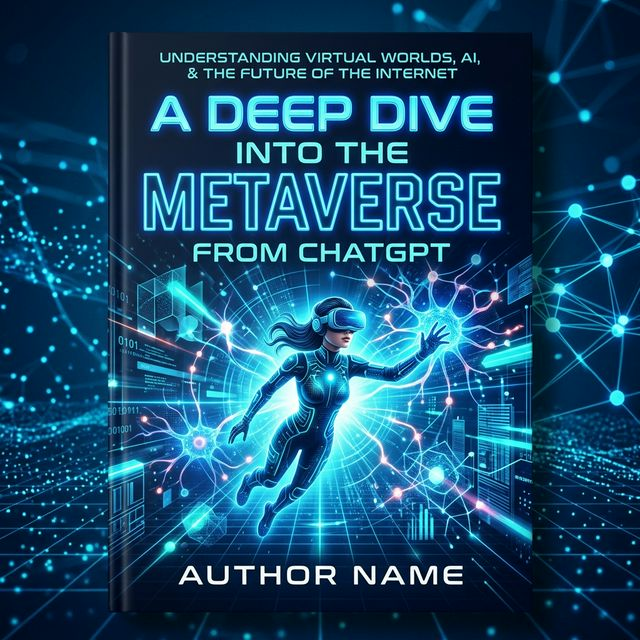

"메타버스와 AI의 결합을 다룬 글로벌 베스트셀러"
"사람을 위한 AI 세상을 펼치는 것이 나의 꿈입니다."
정우진
기술의 정점에서 사람을 봅니다. 내일을 바꾸는 AI, 그 이상의 가치를 설계합니다.
단순히 도구를 가르치는 강사가 아닙니다. 문자와 컴퓨터를 넘어선 AI 기반의 새로운 지식 생산 패러다임을 선도하며, 기술이 우리 삶에 어떤 가치를 가져다줄 수 있는지 고민하는 전략가입니다.
행정안전부 컨설팅 위원, 테크저널리스트 등 공공과 민간을 넘나드는 폭넓은 시각을 바탕으로, 울산광역시 교육보좌관 및 이노베이션스쿨 팀장으로서 정책 현장의 복잡한 문제들을 실질적인 AI 솔루션으로 해결해왔습니다.
전국 100여 곳 이상의 교육 현장에서 2만 명 이상의 시민들과 호흡하며 입증한 것은 기술의 화려함이 아닌, AI를 통해 누구나 자신의 잠재력을 확장할 수 있는 '지식의 민주화'를 향한 진심이었습니다.
20,000+
누적 수강생
100+
강의 기관
주요 이력 및 활동
- 현)행정안전부 [찾아가는 컨설팅 위원] (2023-현재)
- 현)테크저널리스트 / ESG 강연 전문가 / 전문면접관
- 전)울산정보산업진흥원 이노베이션스쿨 팀장 (2021-2022)
- 전)울산연구원 울산열린시민대학 팀장 (2020-2021)
- 전)울산광역시 교육보좌관 (2018-2020)
- 전)울산대학교 정책대학원 외래강사 (2007-2017)
주요 저서
챗GPT엔지니어링

A Deep Dive into...
ALL IS WELL
학력 및 배경
- 미시간주립대학교
텔레커뮤니케이션 졸업 - 울산대학교
경영학 마케팅 박사 수료 - 미시간어학원
전) 원장 역임